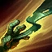
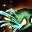

CURSED TOUCH
Amumu's basic attacks Curse his enemies, causing them to take bonus true damage from incoming magic damage.
BANDAGE TOSS
Amumu tosses a sticky bandage at a target, stunning and damaging the target while he pulls himself to them.
DESPAIR
Overcome by anguish, nearby enemies lose a percentage of their maximum Health each second and have their Curses refreshed.
TANTRUM
Permanently reduces the physical damage Amumu would take. Amumu can unleash his rage, dealing damage to surrounding enemies. Each time Amumu is hit, the cooldown on Tantrum is reduced by 0.5 seconds.
CURSE OF THE SAD MUMMY
Amumu entangles surrounding enemy units in bandages, applying his Curse, damaging and stunning them.